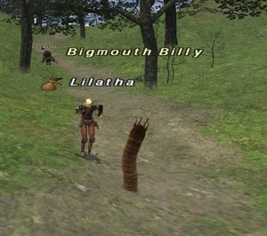

Level 75 reference · Zenith rules
|
Job: Black Mage Notorious Monster |
 |

|
Zone |
Level |
Drops |
Steal |
Spawns |
Notes | ||||||
|
9-10 |
|
1 |
| ||||||||
|
HP = Detects Low HP; M = Detects Magic; Sc = Follows by Scent; T(S) = True-sight; T(H) = True-hearing JA = Detects job abilities; WS = Detects weaponskills; Z(D) = Asleep in Daytime; Z(N) = Asleep at Nighttime | |||||||||||
 Image source
Image source
Notes:
- Only 1 Spawn For this Notorious Monster
- Located around I-8 and I-9 (possibly some of I-7 too)
- On Widescan the Place Holders are 2 Carrion Worms between 4 Forest Hares and a Scarab Beetle and then 3 Wild Sheep
- Killable by most level 12+ jobs solo
Adapted from Eden Wiki: Bigmouth Billy · Contributors and history · CC BY-SA 4.0. Revision 44949. Layout, links and optional background text adapted for Zenith.